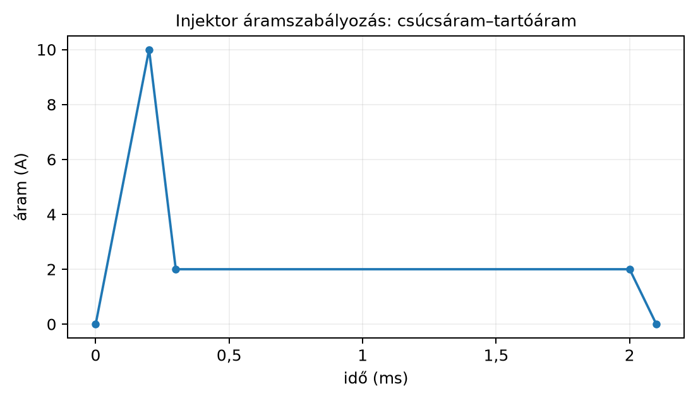
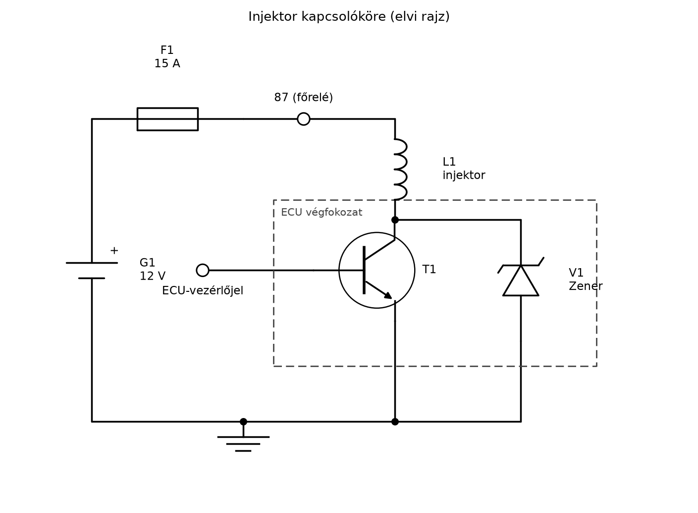

Egy szervizben az ügyfél panasza: a motor hidegen rángat, melegen néha nem veszi fel a gázt, és a műszerfalon világít a motorhiba-lámpa. A hibakód-kiolvasás után a rendszerteszter „2. henger injektor-áramkör hibát” vagy „EGR-szelep visszajelző jel érvénytelen” üzenetet ad. Ilyenkor az autószerelőnek tudnia kell, hogy a motorvezérlő egység (ECU) parancsait hogyan hajtják végre az úgynevezett beavatkozók, és azt is, hogy azokat hogyan lehet szakszerűen, a gyártói adatokkal összehasonlítva megmérni. Ez az alfejezet a benzin- és dízelmotoros rendszerek leggyakoribb beavatkozóit – injektorok, gyújtótekercsek, fojtószelep, alapjárat-szabályozó, EGR-szelep, turbó-nyomásszabályozó, tartályszellőztető szelep – mutatja be, és előkészíti a későbbi, oszcilloszkópos méréseket.
Képzeljük el a motorirányítás zárt szabályozási körét: az érzékelők jeleit (légtömeg, fordulatszám, hőmérséklet, lambdaszonda) az ECU feldolgozza, majd villamos jelekkel utasítja a beavatkozókat. Például egy injektor úgy adagol, hogy az ECU rövid időre földre zárja az injektor tekercsét, ezáltal az mágneses tér kinyitja a szeleget. A gyújtótekercsnél hasonló elvű, de nagyobb energiájú kapcsolás történik. Az elektronikus fojtószelep egy villanymotorral állítja a szívócső levegőáramát, míg az EGR-szelep és a turbó szabályozó az emisszió és a töltőnyomás beállításáért felel. Az alábbi kapcsolási rajz és ábrák segítenek a szemléltetésben.
Definíció. Beavatkozó (actuator): olyan villamos, elektromágneses, pneumatikus vagy hidraulikus végrehajtó elem, amely a motorvezérlő egység parancsát mechanikai mozgássá, áramlássá vagy villamos kisüléssé alakítja. A gépjárművekben leginkább mágnesszelepek (solenoid), villanymotorok és gyújtótekercsek fordulnak elő.
Definíció. PWM-vezérlés (pulse-width modulation, impulzusszélesség-moduláció): a vezérlőjel feszültségét állandó amplitúdóval, de változó bekapcsolási idővel (kitöltési tényezővel) kapcsoljuk. A kitöltési tényező , ahol a bekapcsolt idő, a periódusidő. A beavatkozó pillanatnyi árama vagy teljesítménye a -vel arányosítható.
Megjegyzés. A modern EDC (Electronic Diesel Control) és Motronic-rendszerekben az ECU szinte minden beavatkozót kapcsolóüzemmódban, azaz gyors ki- és bekapcsolással, PWM-mel vagy egyetlen, időzített impulzussal működtet; ritkábban analóg feszültséggel.
Feladat. Az injektor (befecskendezőszelep) a tüzelőanyagot adott idő alatt, porlasztva a szívócsőbe (közvetett befecskendezés) vagy közvetlenül az égéstérbe juttatja. A motorterhelés és fordulatszám függvényében az ECU meghatározza a szükséges tüzelőanyag-mennyiséget, és abból kiszámítja a nyitási időt.
Felépítés és működés. A leggyakoribb injektor egy elektromágneses szelep: a tűszelepet rugó nyomja a szelepülésre, a tekercsbe vezetett áram pedig mágneses erővel felemeli a tűt. Amíg a szelep nyitva van, a tüzelőanyag a rögzített nyomáskülönbség (benzinmotoroknál a szívócsőnyomás és a befecskendezési nyomás, dízelmotoroknál a közös nyomásterű rendszer nyomása) hatására átáramlik. A nyitási idő ezredmásodperc nagyságrendű: Otto-motoroknál jellemzően – , dízelmotoroknál – (ellenőrizendő: gyártói adat, rendszerfüggő).
Összefüggés. A befecskendezett tüzelőanyag-térfogat közelítőleg arányos a nyitási idővel:
ahol a befecskendezett térfogat (mm³ vagy cm³), az injektor statikus átfolyási tényezője (állandó nyomáson, teljesen nyitott tűnél, pl. cm³/min), a nyitási idő (ms vagy min). A gyakorlatban az egyenlet pontosított, mert a nyitás és zárás véges időt vesz igénybe, és a nyomás változhat.
Áramszabályozott működtetés. Az injektor tekercsének induktivitása miatt az áram nem ugrik azonnal. Ha az ECU egyszerűen bekapcsolná a tranzisztort, az áram exponenciálisan emelkedne, késleltetve a nyitást. A szívócső-befecskendezés nagy impedanciájú (kb. –) injektorait az ECU egyszerűen bekapcsolja: 12 V-on az áram legfeljebb -ig emelkedik (telítéses vezérlés). Az alacsony impedanciájú (kb. –) injektorokat – benzin-közvetlenbefecskendezés, common rail mágnesszelepes injektorok – kétfázisú, ún. csúcsáram–tartóáram üzemmódban működtetik, gyakran emelt (boost) feszültségről (ellenőrizendő: gyártói adat):
A csúcsáram–tartóáram hullámalakot a következő ábra szemlélteti.

SZÁMÍTÁS – nyitási idő és befecskendezett mennyiség
Adott: egy benzinmotor injektor statikus átfolyása a rendszer üzemi nyomásán (pl. ). Az ECU adott üzemállapotban nyitási időt számít.
Keresett: a befecskendezett tüzelőanyag-térfogat egy henger munkaciklusában.
Megoldás:
Váltsuk át a nyitási időt percre:
Számítsuk ki a térfogatot:
Váltsuk át mm³-re:
Ellenőrzés: a kapott érték reális, mert egy Otto-motor egy hengerébe járó mennyiség jellemzően néhány tíz mm³ nagyságrendű.
Összefüggés. A nyitási időt az ECU az alábbi formula szerint közelíti (példa): ahol a légtömegből és a sztöchiometrikus keverési arányból számított alap idő, a cél légviszony, és korrekciós tényezők, az akkumulátorfeszültség stb. kompenzációja. A pontos peremfeltételeket mindig a gyártó adja meg.
Tranzisztoros végfokozat. Az injektor kapcsolását az ECU végfokozatába épített teljesítmény-tranzisztorok (általában NPN vagy MOSFET) végzik. Egy injektorpár, hengersor vagy hengerenkénti vezérlésű rendszer is előfordul. A következő kapcsolási rajz elvi felépítést mutat.

Megjegyzés. A rajzon az injektortekercs (L1) csak a T1 tranzisztoron át kap testet; a vezérlőjel külön kapcsokon jut a bázisra, a tápvezetékhez nem csatlakozik. A V1 Zener-dióda szerepe, hogy a tranzisztor kikapcsolásakor az induktivitásban tárolt energia ne okozzon a tranzisztort tönkretevő feszültségcsúcsot: a lekapcsolási csúcsot a végfokozat Zener-diódája kb. 60–80 V-ra korlátozza (ellenőrizendő: gyártói adat); ez a tüske az oszcilloszkópon az injektor mechanikus zárásának jele is. A tekerccsel párhuzamos egyszerű szabadonfutó dióda lassítaná a zárást, ezért injektorvégfokozatban ritka. A valódi ECU-kban gyakran belső aktív áramkorlátozás és további védőáramkörök is vannak.
Feladat. A gyújtótekercs feladata, hogy a gyújtási időpontban nagyfeszültségű szikrát szolgáltasson a gyújtógyertyának. A tekercsben a primer tekercs áramának hirtelen megszakításával indukálódik a szekunder nagyfeszültség.
Zárásszög-szabályozás. Ahhoz, hogy a primer áram elérje a kívánt megszakítási áramot (pl. ), idő kell. Az ECU a gyújtási időpont előtt annyi idővel zárja a primerkört, hogy a tekercs árama elérje a célértéket. Ezt az időt zárási időnek (, angolul dwell time) nevezzük. Hagyományos, megszakítós rendszereknél ezt zárásszögben adták meg – az elosztótengely azon szögelfordulása, amíg a primer kör zárva van (az elosztótengely a főtengely fele akkora fordulatszámmal forog, ezért a főtengelyszög ennek kétszerese; pl. 4 hengeres motornál a 90°-os szikraközből a zárásszög kb. 50–54° elosztótengely-fok; ellenőrizendő). Elektronikus rendszerekben az ECU pontos időt számol a tekercs töltésére.
Összefüggés. A zárásszög és a zárási idő közötti kapcsolat:
ahol a zárásszög főtengely-fokban, a zárási idő (s a második alakban), a ciklusidő (ms) két gyújtás között. (Elosztótengely-fokban a zárásszög ennek fele: .) Négyütemű motornál egy hengernél ms (ahol fordulatszám 1/min), mert egy henger minden második fordulatnál gyújt, vagyis a ciklus 720° főtengelyszög.
SZÁMÍTÁS – zárásszög-szabályozás
Adott: egy motor fordulatszáma . Az ECU által igényelt zárási idő (ellenőrizendő: gyártói adat).
Keresett: a zárásszög fokban.
Megoldás:
Ellenőrzés: 3000 1/min-nél a főtengely 18 000 °/s sebességgel forog, 3,5 ms alatt 63°-ot fordul; elosztótengely-fokban ez 31,5°, ami a régi elosztós rendszerek jellemző 30–60°-os tartományába esik.
Vezérlés. A modern gyújtórendszereknél az ECU nem egyszerűen zárásszöget számít, hanem a tekercs áramát is méri és szabályozza. A primer áramot egy teljesítmény-tranzisztor kapcsolja. A zárási idő alatt a primeráram a tekercs induktivitása miatt fokozatosan nő, amíg el nem éri az áramkorlátot; a megszakításkor a primerfeszültségen több száz voltos csúcs, majd az égési vonal látszik (a szikra ideje alatt).
Az interaktív változatban a fordulatszám, a zárási idő és a fedélzeti feszültség állítható; a kalkulátor kiírja a zárásszöget főtengely- és elosztótengely-fokban (az utóbbi a főtengelyszög fele), valamint azt, hogy a megszakítási áram eléri-e az áramkorlátot.
Példa. Egy intelligens gyújtótekercs (pl. COP – coil-on-plug) esetén az ECU egy vezérlőjelet küld, a tekercsbe épített elektronika pedig maga szabályozza az áramot. Ez csökkenti az ECU terhelését.
Definíció. Az elektronikus fojtószelep (electronic throttle control, ETC) a gázpedál helyzetét érzékelő jel alapján, villanymotorral állítja a fojtószelepet; a pedál és a fojtószelep között nincs mechanikus bowden.
Felépítés. A fojtószelepházban egy szögbeállító egyenáramú motor, egy vagy két potenciométeres vagy Hall-elektrós helyzet-visszajelző, valamint a fojtószeleptányér található. A motor általában hídáramkörön keresztül kap tápfeszültséget, így mindkét irányban forgatható.
Az ábrán követhető, mi mozdul a beavatkozó teszt során: az injektorban a tekercs meghúzza a horgonyt, és a tű felemelkedik a fészekről; a fojtószelep-egységben a DC motor a fogaskerék-áttételen át elfordítja a tányért a visszatérítő rugó ellenében, a két helyzetérzékelő ellentétes jele pedig visszajelzi a szöget; az EGR-szelepnél a működtető lenyitja a szeleptányért, és a hűtött kipufogógáz a szívóoldalra áramlik. Az interaktív változatban a „Vezérlés ki/be” gombbal a két állapot váltható, rámutatásra az alkatrész neve és szerepe jelenik meg.
Működés. Az ECU a gázpedál helyzetéből (és más jelekből, pl. menetstabilizáló) kiszámítja a kívánt nyomatékot, majd ebből a kívánt fojtószelep-szöget. A visszajelző jel és a kívánt érték közötti eltérés alapján PID-szabályozó állítja a motort. Az ETC egyben az alapjárat-szabályozást is ellátja, ezért külön alapjárat-szabályozóra nincs szükség.
Biztonsági funkció. A redundáns visszajelzők lehetővé teszik a hibás jel észlelését. Hiba esetén az ECU csökkentett teljesítményű üzemmódba (limp-home) kapcsol, a fojtószelep rugó hatására kis nyitásra térhet.
Példa. Ha a gázpedál érzékelője hibás jelet ad, az ECU letiltja a motorterhelést, és a vezető csak korlátozottan tud gázt adni; a hibakód tárolódik.
A korábbi, mechanikus fojtószelepű Otto-motoroknál az alapjárati fordulatszámot külön alapjárat-szabályozó szelep (idle air control valve, IACV) tartotta. Ez a fojtószelepet megkerülő légcsatornában lévő, léptetőmotoros vagy forgómotoros tolattyú. Az ECU a hűtőfolyadék-hőmérséklet, a terhelés (klíma, generátor) és a fordulatszám alapján állítja a megkerülő levegő mennyiségét. A mai drive-by-wire rendszerekben ezt a feladatot az elektronikus fojtószelep veszi át, így az alapjárat-szabályozó mint különálló elem már ritka.
Feladat. A kipufogógáz-visszavezető szelep (EGR – exhaust gas recirculation) bizonyos üzemállapotokban a kipufogógáz egy részét visszavezeti a szívóoldalra, hogy csökkentse az égési csúcshőmérsékletet és ezzel a NOx-kibocsátást. Otto- és dízelmotoroknál egyaránt alkalmazzák.
Felépítés és működés. A szelep lehet vákuummal vagy villamosan működtetett. A modern rendszerekben elektromos (egyenáramú vagy léptetőmotoros) EGR-szelepet használnak beépített helyzet-visszajelzővel. Az ECU a visszajelző jel alapján zárt hurkú szabályozással állítja a szelep nyitását.
Példa. Dízelmotornál részterhelésen az ECU 10–40%-os EGR-arányt is beállíthat; a visszajelző potenciométer 0,5–4,5 V jelet ad a nyitás függvényében (ellenőrizendő gyártói adat).
Tipikus hiba. A korom és olajpára lerakódás miatt a szelep beragad, a visszajelző jel ellentmondásos lesz, hibakódot és teljesítményvesztést okoz.
A turbófeltöltős motoroknál a töltőnyomást elektronikusan szabályozzák. Két gyakori megoldás:
A turbószabályozó az emisszió és a teljesítmény egyensúlyát tartja; hibája túltöltés-védelmi üzemmódot (overboost) és hibakódot okoz.
A benzinüzemű járművek párolgáscsökkentő rendszerében a széntöltetű tartályból a kigőzölgést a tartályszellőztető szelep (EVAP purge valve) időszakosan a szívócsőbe vezeti. Az ECU a lambdaszabályozásra való tekintettel PWM-mel szakaszosan nyitja, hogy ne borítsa fel a keveréket. A szelep hibája (ragadás, tekercsszakadás) a motor járását és az emissziót rontja.
A diagnosztika során az alábbi elvi lépéseket követjük; a konkrét mérési adatok és kapcsolási rajzok mindig a gyártói javítási utasításból származnak.
Szabály. A beavatkozó vizsgálatot feszültségmentes állapotban kezdjük: gyújtás ki, kulcs eltávolítva, akkumulátor negatív saru lekötve (a gyártó előírása szerint, adatvesztés elkerülése mellett). Csak ezután bontjuk a csatlakozót és mérünk ellenállást.
Ellenőrzési sorrend:
Figyelem – gyújtás és injektor oszcilloszkópos mérése. A gyújtás primer oldalán lekapcsoláskor több száz volt, a szekunder oldalon több tíz kilovolt feszültség keletkezik (ellenőrizendő: gyártói adat); az injektor lekapcsolási tüskéje kb. 60–80 V, ami a műszer bemenetének kiválasztásánál számít. Járó motornál gyújtótekercset, gyertyacsatlakozót nem húzunk le és nem érintünk; a szekunder jelet csak a gyártó által előírt kapacitív vagy induktív érzékelővel mérjük, a primer jelet osztóval (pl. 10:1 vagy 20:1) védett bemeneten. Szívritmus-szabályozót (pacemaker) viselő személy gyújtási rendszeren nem dolgozik. Ha egy henger gyújtását kiiktatjuk, az injektorát is le kell tiltani, különben a katalizátor károsodik.
Figyelem. A befecskendező rendszerek nagynyomású oldalán (különösen közös nyomásterű dízelmotoroknál) a mért értékek és a beavatkozó teszt a jármű saját veszélyeit hordozza: a nagynyomású tüzelőanyagsugár bőrbe hatolhat, ezért a rendszer nyomásmentesítése és a gyártói eljárás betartása kötelező.
Továbbvitt eredmény. A beavatkozók itt megismert vezérlési módjait (PWM, csúcsáram–tartóáram, zárásszög) és a mérési elveket használjuk az Jeladók és beavatkozók vizsgálata multiméterrel és oszcilloszkóppal alfejezetben; ott részletesen tárgyaljuk a konkrét hullámformák kiértékelését és a hibaazonosítást.
A beavatkozók ellenőrzéséhez az alábbi ellenőrzőlista használható. Az értékek tanulási példák, és minden konkrét járműnél a gyártói javítási adat a mérvadó.
| Beavatkozó | Jellemző ellenőrzés | Példaérték | Megjegyzés |
|---|---|---|---|
| Injektor | tekercsellenállás | – | ellenőrizendő gyártói adat |
| Injektor | vezérlőimpulzus idő | – | terhelésfüggő |
| Gyújtótekercs | primer ellenállás | – | ellenőrizendő |
| Gyújtótekercs | zárási idő | – | a fedélzeti feszültségtől függ (ellenőrizendő) |
| Elektronikus fojtószelep | visszajelző feszültség | – | két jel ellentétes irányban |
| EGR-szelep | visszajelző feszültség | – | nyitás arányában |
| Tartályszellőztető szelep | tekercsellenállás | – | ellenőrizendő |
Valós életbeli alkalmazás.
Egy hét-nyolc éves dízelmotoros autónál alapjáraton remegés, füstölés és időnként vészüzemre váltás jelentkezett. A rendszerteszter hibakódot mutatott: EGR-szelep visszajelző jel érvénytelen. Az autószerelő kiolvasta az élő adatokat: a visszajelző feszültség 0,9 V-nál nem változott, pedig a szelep nyitása 40%-ot kért. Először a csatlakozót és vezetékeket ellenőrizte, majd multiméterrel megmérte a visszajelző kimenetet. A jel nem következett. A szelep kiszerelésekor erős koromlerakódást talált; a szeleptányér beragadt. A szelep tisztítva és újratanítva (adaptálva) lett, a hibakód törlése után próbaúton a jel 0,5–3 V között változott, a motor járása rendeződött. Tanulság: a beavatkozó teszt és az élő adatok megfigyelése hamar lokalizálja a hibát.
Gyakorlati útmutató – beavatkozó-ellenőrzés munkalap
Cél: injektor tekercsellenállás mérése és vezérlőjel ellenőrzése, beavatkozóteszt végrehajtása.
Jármű- és adatazonosítás: alvázszám, motorszám, típus, évjárat, motorkód; a gyártói javítási adatból a szükséges ellenőrzési értékek.
Szerszámok, mérőeszközök: multiméter, oszcilloszkóp, rendszerteszter, bontószerszám, védőkesztyű, szigetelőszőnyeg, elszívó (ha motor jár).
Biztonsági korlát. A feladat tanműhelyi környezetre, oktató felügyeletére és a gyártói javítási utasítás betartására vonatkozik; a megadott értékek tanulási példák. A motor járhat közben az elszívás kötelező; ügyelj a forgó részekre, forró felületekre és a tüzelőanyag rendszerére.
Munkalépések:
Tipikus hibák.
1. feladat (A) Definíció: hogyan működteti az ECU az injektort, és milyen paraméterrel szabályozza az adagolt mennyiséget?
2. feladat (A) Számolja ki, mekkora tüzelőanyag-térfogatot adagol egy injektor nyitási idő alatt, ha statikus átfolyása .
3. feladat (B) Egy négyütemű motor fordulatszáma . Az ECU zárási ideje . Számítsa ki a zárásszöget főtengely-fokban.
4. feladat (B) Adott egy elektronikus fojtószelep visszajelző jele: az 1. potenciométer 0,5 V (zárt) – 4,5 V (nyitott), a 2. potenciométer 4,5 V (zárt) – 0,5 V (nyitott). Az ECU élő adatban 2,0 V-ot és 3,2 V-ot mutat. A gyártói tűrés: a két jel összege (tanulási példa). Lehetséges-e ez normál működés esetén? Indokolja.
5. feladat (C) Egy injektor (nagy impedanciájú, szívócsőbe fecskendező típus) tekercsellenállása a gyártói adat szerint –, de a multiméter 2,3 -t mér. Milyen hibára következtethetünk, és milyen további vizsgálatot javasol?
6. feladat (D) Egy turbófeltöltős dízelmotornál túltöltés-védelmi üzemmód és „turbó mágnesszelep áramkör” hibakódja van. Rendszerteszterrel a beavatkozó teszt során a mágnesszelep nem kattog. A csatlakozón a tápfeszültség 12 V, a vezérlőjel azonban 0 V (nincs PWM). Mi a következtetés? Indokolja a diagnosztikai lépéseket.
Önellenőrzés – válaszok
1. feladat (A) Az ECU egy teljesítménytranzisztorral kapcsolja az injektor tekercsét; a nyitási időt () szabályozza, amellyel arányos a befecskendezett tüzelőanyag-mennyiség.
2. feladat (A) , . Számoljuk: . Tehát 12 mm³.
3. feladat (B) . . A zárásszög főtengelyszög (elosztótengely-fokban ).
4. feladat (B) Az 1. jel , így a nyitás . A 2. jel várt értéke ; a két jel összege normálisan . A mért a -os tűrésen kívül esik: a két jel nem hihető, az ECU hibát tárol és vészüzemre vált. Ellenőrizzük a jeladók tápját (), testét, a csatlakozót, majd a fojtószelep-egységet.
5. feladat (C) Előbb ellenőrizzük, hogy a típus valóban nagy impedanciájú-e (az alacsony impedanciájú, kb. 1–3 -os injektoroknál a 2,3 éppen normális érték). Ha igen, az alacsony ellenállás (2,3 ) a menetzárlatra utalhat. Ezt követően javasolt az injektor ki- és beszerelés utáni ellenőrzése, valamint cseréje, mert a menetzárlatos injektor nem működik megfelelően.
6. feladat (D) A vezérlőjel hiánya az ECU és a mágnesszelep közötti szakadást, vezetékhibát, vagy az ECU meghibásodását jelzi. A tápfeszültség megléte kizárja a biztosíték/tápellátás hibát. A diagnosztikai lépések: feszültségmentesítés után ellenőrizni a vezetékek folytonosságát, ellenállását, esetleg oszcilloszkóppal a kimenetet; ha a vezetékek jók, az ECU végfokozata hibás.
Ebben az alfejezetben a motorirányítás legfontosabb beavatkozóit tekintettük át: a befecskendezőszelepeket, a gyújtótekercseket, az elektronikus fojtószelepet, az alapjárat-szabályozót, az EGR-szelepet, a turbó-nyomásszabályozót és a tartályszellőztető szelepet. A beavatkozók jellemzően kapcsolóüzemű, PWM-vezérelt elemek; az injektoroknál a csúcsáram–tartóáram mód gyors nyitást és kis hőtermelést biztosít. A befecskendezett tüzelőanyag-mennyiség a nyitási idővel arányos: . A gyújtótekercsnél a zárási idő/szög meghatározza a primer áram nagyságát; a zárásszög számítható a ciklusidőből. Az elektronikus fojtószelep a pedáljelből állítja a levegőmennyiséget és átveszi az alapjárat-szabályozást. A diagnosztikai vizsgálat során feszültségmentesítés után tekercsellenállást mérünk, majd oszcilloszkóppal és rendszerteszterrel ellenőrizzük a vezérlőjeleket és a működést. Minden mért értéket a gyártói javítási adattal kell összevetni; a megadott példaértékek tanulási célúak. A beavatkozók vezérlésének elveit a Jeladók és beavatkozók vizsgálata multiméterrel és oszcilloszkóppal alfejezetben alkalmazzuk a részletes hibakeresésnél.
Forrástípusok: gyártói javítási utasítások és kapcsolási rajzok (pl. injektor vezérlőkapcsolás, EGR visszajelző értékek), a gyártó által megadott beavatkozóteszt-eljárások, a vonatkozó OBD/EOBD diagnosztikai szabványok (ISO 15031), valamint a motorirányítás alapjait tárgyaló szakkönyvek. Az alábbi állítások ellenőrizendők: a befecskendezők jellemző nyitási idői és áramértékei, a gyújtótekercs primer ellenállás- és zárási idő tartománya, az injektor tekercsellenállás példaértéke, az EGR visszajelző feszültség tartománya, a mágnesszelepek ellenállásai. A feltüntetett számok tanulási példák, konkrét járműnél a gyártói adat a mérvadó. A jogszabályi hatásokat az alfejezet nem tárgyalja, de a beavatkozók diagnosztikája a hatályos környezetvédelmi és munkavédelmi előírások betartásával végezhető.